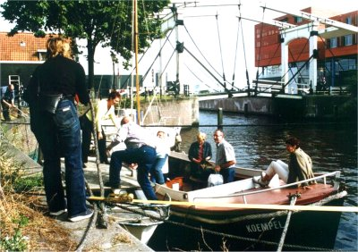

Dit is geen photoshop-fake! Deze sloep ligt echt in Amsterdam
afgemeerd in de westhaven. De eigenaar is een Roda-fan uit
Roermond. Op mooie dagen vaart hij er met zijn vrienden meij er met zijn vrienden mee
door de Amsterdamse grachten.
© Koempels
Pleasure Dome